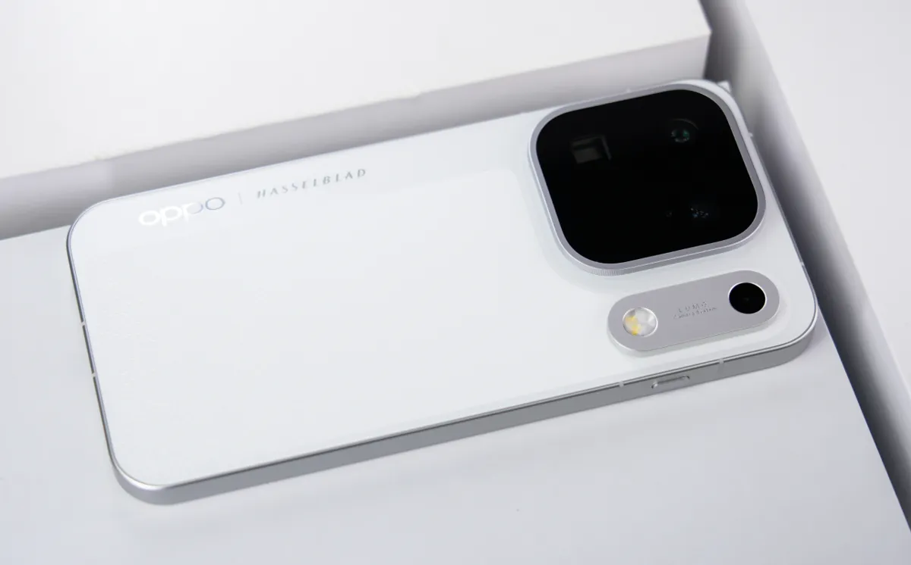
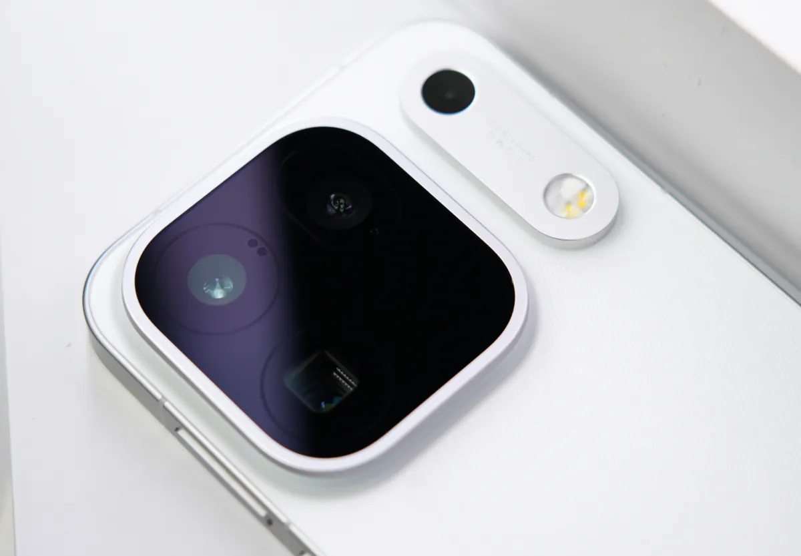
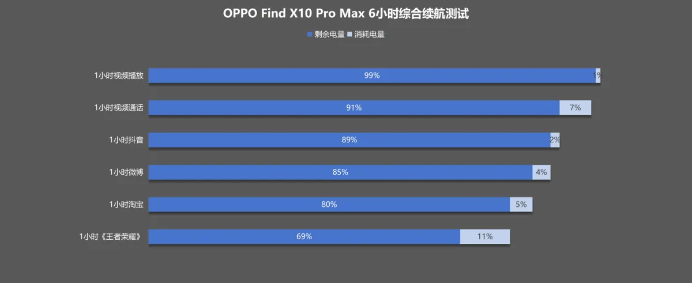
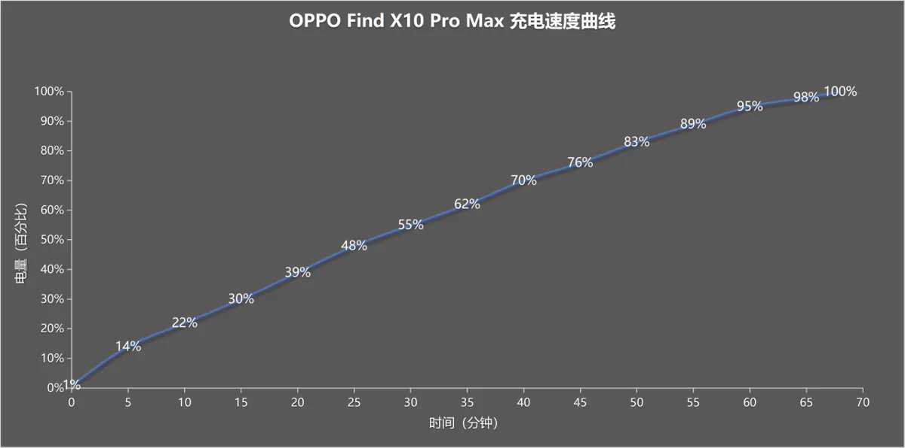
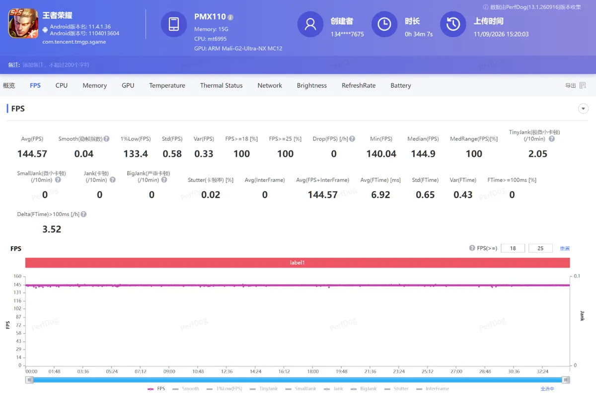
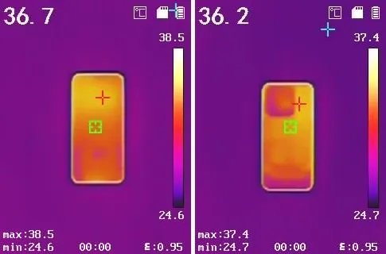
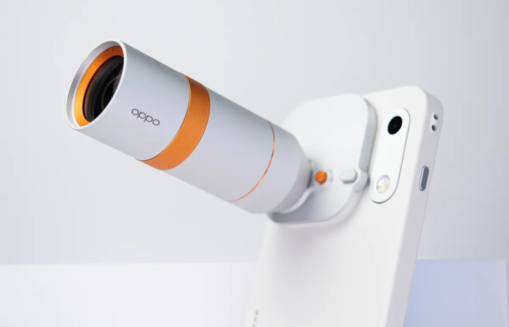
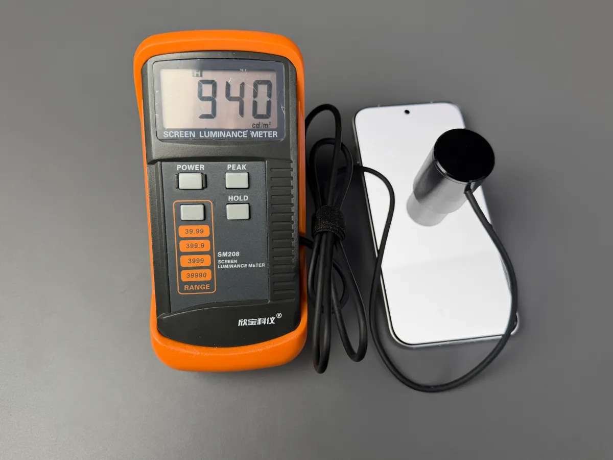
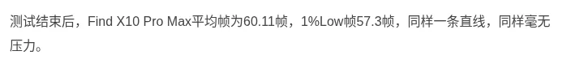

تقنية4 دقائق
أوبو Find X10 Pro Max: معالج Dimensity 9600 Pro وثلاث كاميرات بدقة 200 ميغابكسل وبطارية 8,000mAh
تحديث 22 أكتوبر 2026: أُطلق Find X10 Pro Max عالميًا في 21 أكتوبر، وحدّثنا معلومات النسخة العالمية.
أعلنت أوبو عن Find X10 Pro Max في الصين يوم 22 سبتمبر 2026، وبدأت مبيعاته في 24 سبتمبر. أما الإطلاق العالمي فتم في 21 أكتوبر في مايوركا.
يجمع الهاتف بين ثلاثة عناصر رئيسية:
- معالج MediaTek Dimensity 9600 Pro بدقة تصنيع 2nm.
- ثلاث كاميرات خلفية بدقة 200 ميغابكسل لكل منها، بالتعاون مع Hasselblad.
- بطارية بسعة 8,000mAh في النسخة الصينية.

المواصفات الرئيسية
| المعيار | التفاصيل |
|---|---|
| المعالج | Dimensity 9600 Pro بدقة 2nm (2×4.55 + 3×4.35 + 3×3.1GHz) |
| الشاشة | 6.78 بوصة LTPO بدقة 2772×1272 وتردد 144Hz، وذروة 3,600 nit (رسميًا) |
| البطارية | 8,000mAh (النسخة الأوروبية 7,150mAh) |
| الشحن | 80W سلكي، 50W لاسلكي |
| الكاميرا الرئيسية | 200MP بمستشعر 1/1.3" وفتحة f/1.5 |
| المقرّبة | 200MP بمستشعر 1/1.56" وفتحة f/2.1، وبعد بؤري 70 مم (3x) |
| فائقة الاتساع | 200MP بفتحة f/2.2 |
| الأمامية | 50MP |
| الحماية | IP66 / IP68 / IP69 |
| الوزن والسماكة | رسميًا 235 غرامًا و8.4 مم |
| السعر في الصين | 6,799 يوان (12+256)، و7,499 و7,999 و8,999 |
يبدأ السعر الأساسي في الصين من 6,799 يوان بحسب المصادر.
تنبيهات تعارض:
- الوزن والسماكة: GSMArena يذكر 233 غرامًا. أما IT之家 فقاس 236 غرامًا وسماكة 8.6 مم، مقابل 8.4 مم رسميًا.
- زاوية العدسة فائقة الاتساع: 124° بحسب Fonearena وIT之家، و13 مم بحسب GSMArena. القيمتان قد تكونان وصفين للشيء نفسه، لكن لم نتحقق من ذلك.

تقييمات الملاك (Coolapk)
لم نعثر على تقييمات للهاتف في Coolapk حتى الآن.
البطارية
اختبارات AnTuTu:
- اختبار مختلط لمدة 6 ساعات: بقي 69%.
- اختبار ألعاب لمدة 3 ساعات: بقي 67%. استهلكت Honor of Kings 7%، وGenshin 9%، وStar Rail 17%.
- الشحن: 14% بعد 5 دقائق، و22% بعد 10 دقائق، و89% بعد 55 دقيقة، وشحن كامل خلال 69 دقيقة.
لم نجد نتيجة WHYLAB لهذا الطراز.
صادفنا رقمًا لاستخدام ألعاب كثيف يبلغ نحو 8 ساعات و10 دقائق، لكن مصدره غير واضح، فلم نعتمده.


الأداء والحرارة
نتائج AnTuTu:
- Honor of Kings: متوسط 144.57fps، وقيمة 1% Low بلغت 133.4. الحرارة 38.5°C في الواجهة و37.4°C في الظهر.
- Genshin Impact: متوسط 60.11fps، وقيمة 1% Low بلغت 57.3. الحرارة 37.8°C في الواجهة و37°C في الظهر.
نتائج IT之家:
- AnTuTu: 4,150,362 نقطة.
- Geekbench 6: 3806 نقطة للنواة الواحدة، و10863 للأنوية المتعددة.
- Steel Nomad Light: 3527.
- Genshin: 59.0fps باستهلاك 3.38W وحرارة 35.7°C.
- 燕云: 57.3fps باستهلاك 5.77W وحرارة 37.2°C.
يصف IT之家 ضبط الأداء بأنه محافظ.


الكاميرا
ثلاث عدسات بدقة 200MP، بالتعاون مع Hasselblad.
نشرت AnTuTu عينات بورتريه، وعرضت ملحق التقريب الخارجي (teleconverter).

الشاشة
تنبيه تعارض: الذروة الرسمية 3,600 nit، وFonearena يذكر 2,000 nit. أما AnTuTu فقاس 940 nit في الوضع اليدوي.
القيم الثلاث ليست متناقضة بالضرورة، لأنها تقيس أوضاعًا مختلفة.

البرمجيات
يعمل الهاتف بنظام ColorOS 17 المبني على Android 17. النسخة الصينية تأتي بخدمات صينية.
تقييمات المصادر الصينية
| المصدر | ما اختبره | النتيجة | الرابط |
|---|---|---|---|
| AnTuTu 安兔兔 | الألعاب والحرارة والبطارية والشحن | Honor of Kings 30 دقيقة: 144.57 إطارًا وأدنى 1% عند 133.4، وأعلى حرارة أمامية 38.5 درجة. Genshin "极高" 30 دقيقة: 60.11 إطارًا وأدنى 1% عند 57.3، و37.8 درجة. 6 ساعات استخدام مختلط: بقي 69%. 3 ساعات ألعاب: بقي 67%. الشحن من 1%: 22% بعد 10 دقائق والامتلاء في 69 دقيقة. | الرابط |
| WHYLAB 微机分 (منشور Weibo عبر Sina) | الأداء والبطارية (فيديو) | نُشر اختبار "性能续航实测" للنسخة التجارية في 15 سبتمبر، لكن نص المنشور لا يتضمن الأرقام، فلم ننقلها. | الرابط |
| Coolapk 酷安 | تقييم الملّاك | الأرقام في قسم تقييم الملّاك أعلاه. موقع Coolapk محجوب، ولم نجد ناقلًا موثقًا يعرض أرقام هذا الهاتف. | - |
| Geekerwan 极客湾، ZOL 中关村在线، CNMO 手机中国، ITHome IT之家، PConline، Zealer، IT168، Sina Tech | - | لم يُختبر بعد. لم نعثر على اختبار منشور. | - |
يتفق المصدر المفصل (AnTuTu) على ثبات الإطارات وحرارة منخفضة نسبيًا لا تتجاوز 38.5 درجة في اختباراته، وعلى بطارية تُبقي 67% إلى 69% بعد 3 إلى 6 ساعات. أرقام WHYLAB منشورة في فيديو لم نتمكن من التحقق منها نصيًا، لذا لا توجد مقارنة مؤكدة بين مصدرين بعد.
آخر تحديث للتقييمات: 22 أكتوبر 2026

نقاط القوة والضعف
- قوة: أداء ثابت في الألعاب مع حرارة معتدلة.
- قوة: نتائج بطارية جيدة في اختبارات AnTuTu.
- قوة: ثلاث كاميرات بدقة 200MP، وحماية IP69.
- ضعف: أغلى هواتف المقارنة.
- ضعف: الوزن نحو 235 غرامًا.
- ضعف: بطارية النسخة الأوروبية أصغر (7,150mAh).
- ضعف: لا توجد نتيجة WHYLAB ولا تقييمات Coolapk.
نصيحة للمشتري الخليجي
- الشبكات: يُدرج GSMArena الترددين B20 وn78 لهذا الطراز. مع ذلك، تحقق من جدول نسختك تحديدًا.
- النسخة العالمية: أُطلقت في 21 أكتوبر بسعر 1,499 جنيهًا في بريطانيا. انتظارها يعني ضمانًا أوضح وخدمات Google، والبطارية 7,150mAh في النسخة الأوروبية و8,000mAh في النسخة الإماراتية المدرجة بحالة "قريبًا". التفاصيل في مقالنا عن الإطلاق العالمي.
- النسخة الصينية: لا ضمان محليًا، والخدمات صينية.
- أضف الشحن والجمارك إلى سعر 6,799 يوان.
الخلاصة
Find X10 Pro Max يقدم أداءً مستقرًا، وحرارة معتدلة، وبطارية جيدة في اختبارات AnTuTu وIT之家. لكن السعر والوزن مرتفعان، والنسخة العالمية ببطارية أصغر.
أداء متزن وكاميرات طموحة، والقرار الخليجي مرتبط بالنسخة العالمية
#midroid5G #OPPO #FindX10ProMax